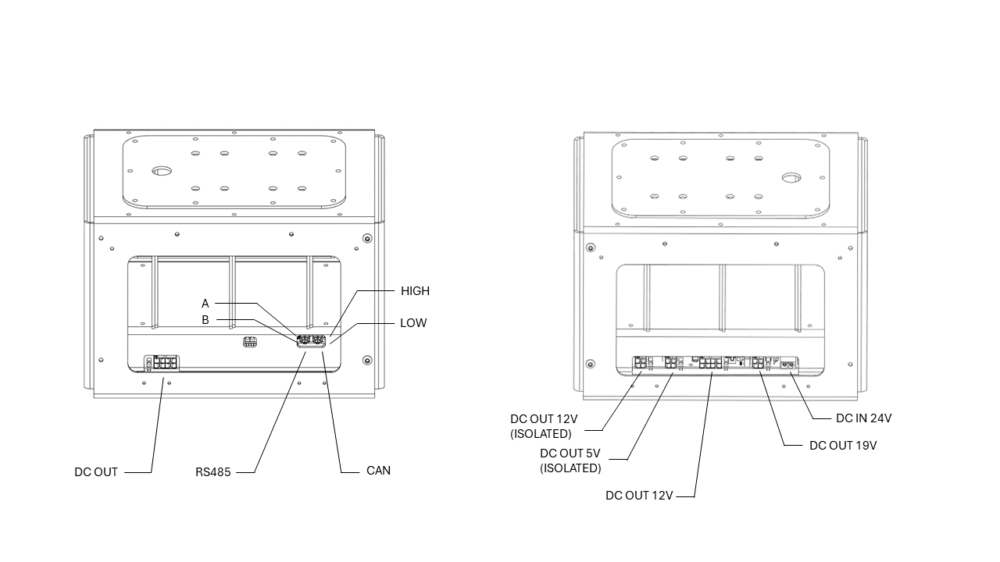

UGV Development Kit V1
Revision History
Revision |
Date (DD/MM/YYYY) |
Author |
Changes |
|---|---|---|---|
1 |
18/04/2024 |
WR Dev Team |
Initial release |
2 |
02/05/2024 |
Andrew Chia |
Hardware Configuration |
1. Overview
The UGV development kit, together with a robot base, provide a powerful yet flexible mobile robot hardware platform for research and fast prototyping. The kit is designed to be compatible with a wide range of robot bases. Additional components can be easily added on top of the base frame according to application-specific requirements. The platform can be used to implement a wide range of applications, such as autonomous navigation, mapping, and object detection.

This base configuration of the development kit consists of the following pre-configured components:
Additional computers can be added to the base configuration to support more complex applications:
Jetson Orin NX
Mini PC (Intel Core i7)
The following extension modules are available to be added to the base configuration:
Ouster OS1 Lidar + IMU
RTK/GNSS Module
Ultrasonic Sensor Array
Besides the official extension modules, the development kit can be further customized with additional components of your choice. Please feel free to check with us if you have any customization requirements (contact@westonrobot.com).
2. Hardware
Dimensions
Dimensions |
310mm(L) x 280mm(B) x 200mm(H) |
Dry Weight (Incl. Power Regulator) |
~3kg |
Power Module (In-built)
{kind=link}

Port |
Voltage |
Current (Max) |
Power |
Fused |
|---|---|---|---|---|
Main input |
18-32V |
20A |
/ |
20A fuse |
Output - 19V |
19V |
8A |
150W |
10A fuse |
Output - 12V |
12V |
10A |
120W |
15A fuse |
Output - 5V isolated |
5V |
4A |
20W |
Resettable |
Output - 12V isolated |
12V |
3.3A |
40W |
Resettable |
Output - extension |
Input voltage |
/ |
Limited by total power |
/ |
You can find more information about how to reconfigure the internal components of the UGV development kit in the
3. Software
We have pre-configured the network settings and installed necessary driver software on the NanoPC-based onboard computer. A few sample applications are also pre-installed to help you get started with the development kit.
Network
The router is pre-configured to use the IP range 10.10.0.0/24.
The IP addresses are assigned as follows:
Device Type |
IP Range |
|---|---|
onboard computers |
10.10.0.10-10.10.0.20/24 |
navigation sensors |
10.10.0.30-10.10.0.40/24 |
application sensors |
10.10.0.100-10.10.0.120/24 |
It’s recommended but not mandatory to follow the above IP assignment rules. You can change the IP addresses according to your requirements. We follow this convention to configure the development kit by default. Please refer to the delivery note for the actual IP assignment on your robot.
Software Setup
The UGV development kit is pre-installed with the following software stacks:
ROS2 driver for the robot base and sensors
Note
The ROS drivers are only for components that are part of the base configuration or extension modules supported by Weston Robot.
The open-source mapping and navigation stacks are pre-installed for demonstration purposes and are provided as is. You can modify the software stack according to your requirements.